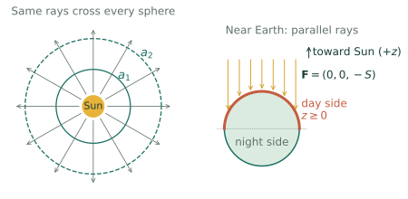
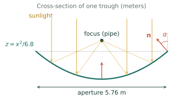
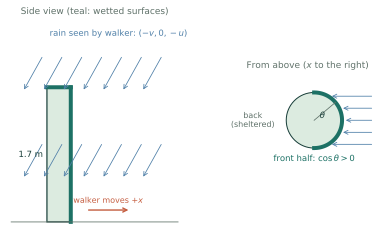
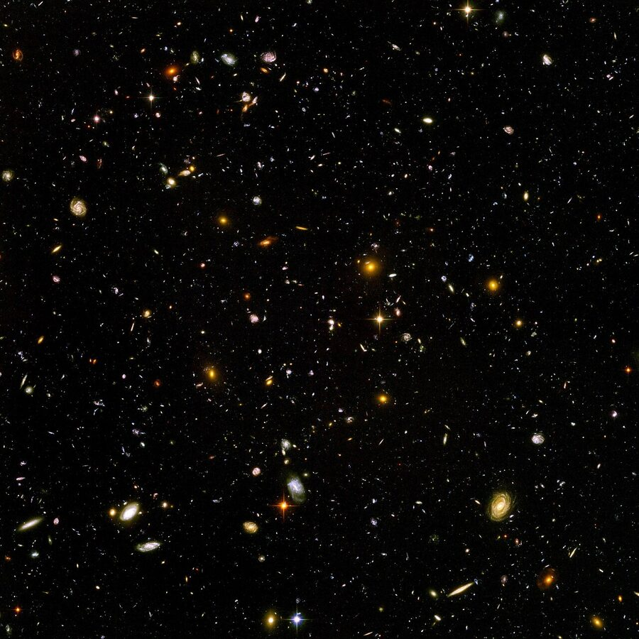
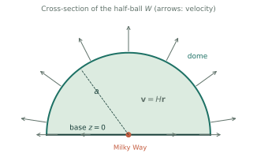
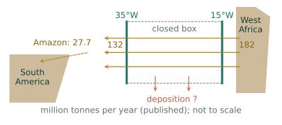

Evaluate scalar surface integrals, plain and weighted, on spheres, cylinders, and graphs
Spot when an integrand cancels the area factor
Choose an orientation and check it with the cross product \(\Phi_u\times\Phi_v\)
Compute flux with \(\mathbf n\,dS\), with the graph element \((-g_x,-g_y,1)\,dA\), and on spheres with \(\mathbf n=\mathbf r/a\)
Interpret the sign of a flux, and compare the flux out of a closed surface with the volume inside
Scalar surface integral, for a parametrization \(\Phi:D\to S\): \(\iint_S f\,dS=\iint_D f(\Phi)\,\|\Phi_u\times\Phi_v\|\,du\,dv\)
Flux through \(S\) oriented by \(\Phi_u\times\Phi_v\): \(\iint_S\mathbf F\cdot d\mathbf S=\iint_D\mathbf F(\Phi)\cdot(\Phi_u\times\Phi_v)\,du\,dv=\iint_S\mathbf F\cdot\mathbf n\,dS\)
Graph \(z=g(x,y)\) oriented upward: \(d\mathbf S=(-g_x,-g_y,1)\,dA\). Sphere of radius \(a\) centered at the origin: \(dS=a^2\sin\phi\,d\phi\,d\theta\) and outward \(\mathbf n=\mathbf r/a\)
Entering answers
Type numbers or formulas: fractions, decimals, pi, e, sqrt(...), sin(...), cos(...), exp(...), log(...). Use ^ for powers and radians for angles; separate vector components with commas.
Any equivalent form is accepted: 3/2, 1.5, and 6/4 are all the same answer, and so are (4/3)pi r^3 and 4 pi r^3/3.
Decimals must be correct to two decimal places (answers smaller than 0.1 need two significant digits). Exact forms such as 6pi sqrt(37) are always fine.
LaTeX such as \frac{1}{2}, \sqrt{2}, \pi, and \phi also works. A potential function may differ from ours by a constant. Units are shown beside each box.
Hints and solutions are built into the page, and nothing you type is sent anywhere: your answers and notes stay in this browser. This is an ungraded practice site.
Problem 01Core
Weighing sunlight: the Sun’s power and Earth’s share
Above the atmosphere, a surface facing the Sun receives about 1361 watts on every square meter. This number, the total solar irradiance, is measured by radiometers on satellites. It is the starting point of climate energy budgets, which track how much of the Sun’s power reaches Earth. From this one number you can find the Sun’s total power output, called its luminosity. How much power does the Sun put out, how much of it does Earth intercept, and how much arrives on an average square meter of Earth, day side and night side together?
Building the model
1From the real world
Total solar irradiance at Earth’s distance: \(S=1360.8\) W/m2
Mean Earth–Sun distance: \(d=149.6\times10^6\) km
Earth’s mean radius: \(R=6371\) km
Published luminosity of the Sun (for checking): \(382.8\times10^{24}\) W
Sunlight spreads out equally in all directions, and nothing between the Sun and Earth absorbs it.
Near Earth the Sun is so far away that its rays are parallel.
Earth is a perfect sphere.
3So the model is
Sunlight (W/m2), with the Sun at the origin: \(\mathbf F(\mathbf r)=Sd^2\,\dfrac{\mathbf r}{|\mathbf r|^3}\)
Near Earth, with Earth’s center at the origin and the Sun in the \(+z\) direction: \(\mathbf F=(0,0,-S)\); Earth is the sphere \(x^2+y^2+z^2=R^2\)
Power absorbed per square meter at a day-side point (\(z\ge0\)): \(-\mathbf F\cdot\mathbf n=Sz/R\) W/m2

The model. Left: the same radial rays cross every sphere of radius \(a\) around the Sun, so each sphere catches the same total power. Right: near Earth the rays are parallel, \(\mathbf F=(0,0,-S)\), and they light only the day hemisphere \(z\ge0\).
First, on paper
Before (a): Write the outward unit normal \(\mathbf n\) on the sphere \(|\mathbf r|=a\) centered on the Sun, and evaluate \(\mathbf F\cdot\mathbf n\) there without parametrizing.
After (a): Explain why the flux is the same for every \(a\), and what physical fact that expresses.
Before (b): Set up the power Earth absorbs, \(\iint Sz/R\,dS\) over the day hemisphere \(z\ge0\), using \(dS=R^2\sin\phi\,d\phi\,d\theta\) with the correct range of \(\phi\).
After (b): Interpret \(\iint z\,dS\big/\iint 1\,dS\) over a hemisphere as the height of the center of mass of a thin hemispherical shell.
Compare that height with the solid half-ball’s \(3a/8\), explain the difference, and say which one is the day-side average of \(\cos\zeta\), where \(\zeta\) is the Sun’s angle from straight overhead.
Whiteboard kit ↓An image with the diagram, model, this task, and blank work areas. Add it to your group’s shared whiteboard as a background.
aFind the outward flux of \(\mathbf F\) through the sphere of radius \(a\) centered on the Sun, in yottawatts (\(1\) YW \(=10^{24}\) W). Convert \(d\) to meters first. Your answer should not depend on \(a\).
A step in the right direction
bFor the upper hemisphere \(H\) (\(z\ge0\), curved part only) of the sphere of radius \(a\) centered at the origin, find \(\iint_H z\,dS\) as a function of \(a\).
A step in the right direction
cUsing part (b) with \(a=R\), find the solar power Earth absorbs per square meter, averaged over its whole surface (day side and night side together), in W/m2.
A step in the right direction
View full solution +
Follow the reasoning
Flux through a sphere: On \(|\mathbf r|=a\) the outward unit normal is \(\mathbf n=\mathbf r/a\), and there \(\mathbf F=Sd^2\,\mathbf r/a^3\), so \(\mathbf F\cdot\mathbf n=Sd^2/a^2\) is constant. The flux is therefore \((Sd^2/a^2)(4\pi a^2)=4\pi d^2S=4\pi(1.496\times10^{11})^2(1360.8)\approx3.827\times10^{26}\) W \(=382.71\) YW. This matches the published luminosity of \(382.8\) YW.
Why \(a\) cancels: Every sphere around the Sun catches the same total power, because nothing between the spheres absorbs the light. This is energy conservation.
Absorbed power: On the upper hemisphere of radius \(a\), \(z=a\cos\phi\) with \(0\le\phi\le\pi/2\), so \(\iint_H z\,dS=\int_0^{2\pi}\!\int_0^{\pi/2}a\cos\phi\,a^2\sin\phi\,d\phi\,d\theta=\pi a^3\). With \(a=R\), \[\iint_H\frac{Sz}{R}\,dS=\frac SR\,\pi R^3=S\pi R^2\approx1.735\times10^{17}\text{ W}\] for \(R=6.371\times10^6\) m. This is exactly the sunlight crossing a flat disk of radius \(R\), the disk of Earth’s shadow.
Center of mass: The shell’s area is \(\iint_H1\,dS=2\pi a^2\), so the center of mass of a thin hemispherical shell is at height \(\pi a^3/(2\pi a^2)=a/2\). Bands of equal height on a sphere have equal area, so the shell’s mass is spread evenly in height. The solid half-ball’s center of mass, at \(3a/8\), is lower because most of its volume sits near the flat base. Since \(\cos\zeta=z/R\) on Earth’s day side, the day-side average of \(\cos\zeta\) is the shell’s value \(\tfrac12\), not \(\tfrac38\).
Global average: Averaging over the whole sphere means dividing by its area \(\iint 1\,dS=4\pi R^2\) (an area, not the volume \(\tfrac43\pi R^3\)). This gives \(S\pi R^2/(4\pi R^2)=S/4=340.2\) W/m2, the “about 340 W/m2” of climate energy budgets.
Final answers
a.\(121.819686912 \pi\) YW
b.\(\pi a^{3}\)
c.\(340.2\) W/m2
Discussion
About 340 W/m², one quarter of S. The flux through every sphere centered on the Sun is the same luminosity L, so at distance 2d the irradiance is L/(4π(2d)²) = S/4. Part (a) justifies this: the flux does not depend on the radius, because nothing between the spheres absorbs light.
Think it through
A planet orbits twice as far from the Sun as Earth does. Without computing a new integral, what irradiance does it receive, and which part of your work justifies the answer?
Saved on this browser · Discussion prompt, not automatically graded
Noor Ouarzazate I, on the edge of the Sahara in Morocco, is a 160 MW solar power plant that uses no solar panels. Instead, long curved mirrors called parabolic troughs track the Sun. Each trough’s cross-section is a parabola, so it focuses sunlight onto a pipe of hot oil running along its focal line. The plant’s mirror field is published by its aperture area, 1,308,000 m2. The aperture of a trough is the flat opening across its top, which is smaller than the curved mirror itself. How much solar power do the mirrors catch, and why is it the aperture area, not the larger mirror area, that sets this power?
Building the model
1From the real world
Turbine capacity: \(160\) MW
Solar-field aperture area: \(1{,}308{,}000\) m2
SENER trough (2007 design): aperture width \(5.76\) m, focal length \(1.70\) m, module length \(12\) m
Every trough is a perfect parabolic cylinder with the published SENER dimensions.
Direct sunlight of \(900\) W/m2 arrives along each trough’s axis of symmetry (perfect tracking).
Gaps, shading, dust, and reflection losses are ignored.
3So the model is
Mirror of one module: \(z=g(x,y)=\dfrac{x^2}{4(1.70)}=\dfrac{x^2}{6.8}\) over \(-2.88\le x\le2.88\), \(0\le y\le12\) (meters)
Sunlight: \(\mathbf F=(0,0,-900)\) W/m2; the focus is \(1.70\) m above the vertex
Sunlight per square meter of mirror: \(f=900\cos\alpha\) W/m2, where \(\alpha\) is the angle between the upward unit normal and the vertical

Cross-section of one trough, to scale in meters: the mirror \(z=x^2/6.8\), the \(5.76\) m aperture, and the focus \(1.70\) m above the vertex. Vertical sunbeams reflect to the focus. The orange arrows are upward unit normals \(\mathbf n\); at the rim, \(\mathbf n\) tilts away from the vertical by the angle \(\alpha\).
First, on paper
Sketch the cross-section \(z=x^2/6.8\), \(|x|\le2.88\), with the focus and three vertical sunbeams, and draw the upward unit normal at \(x=0\) and at the rim.
After (a): Write \(\cos\alpha\) as a function of \(x\).
Before (b): Write \(\iint_S f\,dS\) over one 12 m module as a double integral over its shadow, including the factor \(\sqrt{1+g_x^2+g_y^2}\), and spot the cancellation before integrating.
Set up the mirror area \(\iint_S1\,dS\) of the same module, and decide without evaluating whether it is larger or smaller than the \(5.76\times12\) m2 aperture.
Decide whether \(\iint_S1\,dS\) could ever be the volume of the trough, and say why.
Whiteboard kit ↓An image with the diagram, model, this task, and blank work areas. Add it to your group’s shared whiteboard as a background.
aFor the mirror \(z=g(x,y)=x^2/6.8\), enter the upward vector area element \((-g_x,-g_y,1)\), the vector that multiplies \(dA\) in \(d\mathbf S\).
A step in the right direction
bDirect sunlight of \(900\) W/m2 arrives along every trough’s axis of symmetry. Using the published aperture area of \(1{,}308{,}000\) m2, find the total solar power reaching all the mirrors of Noor I, in megawatts.
A step in the right direction
cSunlight is the field \(\mathbf F=(0,0,-900)\) W/m2, and \(D\) is the shadow of one module in the \(xy\)-plane. Which integral gives the solar power, in watts, that hits that module’s mirror?
A step in the right direction
View full solution +
Follow the reasoning
Normal and \(\cos\alpha\): \(g_x=2x/6.8=x/3.4\) and \(g_y=0\), so \((-g_x,-g_y,1)=(-x/3.4,0,1)\). Dividing by its length gives the upward unit normal \(\mathbf n\), so \(\cos\alpha=\mathbf n\cdot\mathbf k=1/\sqrt{1+x^2/11.56}\). This is \(1\) at the bottom and about \(0.76\) at the rim.
Weighted integral: For one module, \[\iint_S f\,dS=\int_0^{12}\!\!\int_{-2.88}^{2.88}\frac{900}{\sqrt{1+x^2/11.56}}\sqrt{1+\frac{x^2}{11.56}}\,dx\,dy=900(5.76)(12)\approx62.2\text{ kW}.\] The cosine cancels the area factor: tilted mirror receives less light per square meter by exactly the factor by which there is more of it.
Mirror area: The mirror area is \(\iint_S1\,dS=12\int_{-2.88}^{2.88}\sqrt{1+x^2/11.56}\,dx\approx76.67\) m2. That is about \(11\%\) more than the \(69.12\) m2 aperture, because the square-root factor exceeds \(1\) away from \(x=0\). It is an area in m2, never a volume.
Choosing the flux formula: Flux uses \(\mathbf F\cdot d\mathbf S=\mathbf F\cdot(-g_x,-g_y,1)\,dA\) with no extra square root. Here that is \(-900\,dA\). The flux of downward light through the upward-oriented mirror is negative, so the minus sign in front turns it into absorbed power. The option with an extra root counts the area factor twice. The one with \(\|\mathbf F\|\) gives \(900\) W/m2 times the mirror area. The one that divides by the root uses the unit normal but leaves out the area factor in \(dS\).
Whole field: Summing over all modules, the power is \(900\) W/m2 times the total aperture area, \(900\times1{,}308{,}000\) W \(=1177.2\) MW. The \(160\) MW turbine rating is about \(14\%\) of this. The collected power depends only on the aperture, which is why the aperture area is the number that matters.
Final answers
a.\(\left(- 0.294117647058824 x,\ 0,\ 1\right)\)
b.\(\frac{5886}{5}\) MW
c.\(-\iint_D\mathbf F\cdot(-g_x,-g_y,1)\,dA\)
Discussion
It goes down, by the factor \(\cos\beta\). With the light tilted along the trough, \(\mathbf F=900(0,\sin\beta,-\cos\beta)\) W/m2, and since \(g_y=0\), \(-\mathbf F\cdot(-g_x,-g_y,1)=900\cos\beta\): the constant \(900\) in the integrand becomes \(900\cos\beta\). Only the component of sunlight along the aperture’s normal is collected, and this “cosine loss” is why trough fields track the Sun.
Think it through
A trough turns about a single axis, its long axis, so the sunlight usually arrives at an angle \(\beta\) to the trough’s axis of symmetry, tilted along the trough’s length. Should the collected power then go up, go down, or stay the same, and which factor in your integral changes?
Saved on this browser · Discussion prompt, not automatically graded
A winter storm rolls in off Monterey Bay just as you leave a UC Santa Cruz lecture hall. Your next class is 100 m away, and you have no umbrella. Should you walk or run? Physicists still publish on this question. In 2012, F. Bocci showed that the best strategy depends on the shape of the moving body and on the wind. Flux integrals answer the question when there is no wind. How much rain lands on you, as a function of your speed, and does running keep you drier?
Building the model
1From the real world
Heavy rain (typical): intensity \(1.52\) cm/h
Median drop diameter \(2.05\) mm; fall velocity \(6.7\) m/s
Your body is a vertical cylinder of radius \(0.15\) m and height \(1.7\) m.
The air is still: rain falls straight down at \(u=6.7\) m/s, and you move in the \(+x\) direction at constant speed \(v\).
Rain lands only on surfaces moving into it, so your body shelters its back half.
Your class is \(100\) m away.
3So the model is
Rain rate \(R=0.0152/3600\) m/s; water fraction of the air (m3 of water per m3 of air) \(\rho=R/u\)
In your frame the rain velocity is \((-v,0,-u)\), and the water-flux field is \(\mathbf F=\rho\,(-v,0,-u)\) (m3 of water per m2 per s)
Body: side \(x^2+y^2=0.15^2\), \(0\le z\le1.7\), and top disk at \(z=1.7\) (meters)

The model in your frame: you move in the \(+x\) direction, and the rain arrives with velocity \((-v,0,-u)\). The top disk and the front half of the side, where \(\cos\theta>0\) (teal), get wet; the back half is sheltered.
First, on paper
Sketch your body (the cylinder) from the side and from above, with the rain velocity \((-v,0,-u)\) that you see.
Before (a): Give the domain of \(\Phi(\theta,z)=(0.15\cos\theta,0.15\sin\theta,z)\), the parametrization of the side.
After (a): Decide whether \(\Phi_\theta\times\Phi_z\) points outward or inward, and say what happens if you list the parameters in the order \((z,\theta)\).
Compute the flux of \(\mathbf F\) through the top disk with the upward normal, and explain its sign.
After (b): On the front half (\(\cos\theta>0\)), water lands at \(g=\rho v\cos\theta\) m3 per square meter of shirt per second. Compute \(\iint g\,dS\) there and compare it with (b).
Explain why the outward flux of \(\mathbf F\) through the whole side is \(0\), and why that is not the amount of water you collect.
Whiteboard kit ↓An image with the diagram, model, this task, and blank work areas. Add it to your group’s shared whiteboard as a background.
aFor the side parametrized by \(\Phi(\theta,z)=(0.15\cos\theta,0.15\sin\theta,z)\), enter \(\Phi_\theta\times\Phi_z\) as a function of \(\theta\).
A step in the right direction
bWalking at \(v=1.5\) m/s, find the outward flux of \(\mathbf F\) through the front half of the side (\(\cos\theta\ge0\)), in milliliters per second (\(1\) m\(^3=10^6\) mL).
A step in the right direction
cYou cross the \(100\) m at constant speed \(v\) (in m/s). Counting only the top disk and the front half of the side, find the total volume of water that lands on you, in mL, as a function of \(v\).
A step in the right direction
View full solution +
Follow the reasoning
Orientation: On the domain \(0\le\theta\le2\pi\), \(0\le z\le1.7\), \(\Phi_\theta=(-0.15\sin\theta,0.15\cos\theta,0)\) and \(\Phi_z=(0,0,1)\), so \(\Phi_\theta\times\Phi_z=(0.15\cos\theta,0.15\sin\theta,0)\). At \(\theta=0\) it is \((0.15,0,0)\), which points away from the axis, so it is outward. Listing the parameters as \((z,\theta)\) gives \(\Phi_z\times\Phi_\theta=-(\Phi_\theta\times\Phi_z)\), the inward normal; to keep the outward orientation you would have to negate it.
Top disk: The water fraction is \(\rho=R/u=(0.0152/3600)/6.7\approx6.30\times10^{-7}\), so rain is less than a millionth water by volume. The top disk has upward normal \(\mathbf k\), and \(\mathbf F\cdot\mathbf k=-\rho u=-R\), so its flux is \(-R\pi(0.15)^2\approx-0.298\) mL/s at any speed. It is negative because the rain moves down through a disk oriented up.
Front half: On the side, \(\mathbf F\cdot(\Phi_\theta\times\Phi_z)=-0.15\rho v\cos\theta\). Over the front half, \[\int_0^{1.7}\!\!\int_{-\pi/2}^{\pi/2}-0.15\rho v\cos\theta\,d\theta\,dz=-2(0.15)(1.7)\rho v\approx-0.482\text{ mL/s}\] at \(v=1.5\) m/s. It is negative because the rain enters your body through the outward-oriented front.
Scalar integral: With \(dS=0.15\,d\theta\,dz\), \(\iint g\,dS\) over the front half gives \(+0.482\) mL/s. It has the same size as (b) but is positive, because a scalar integral carries no orientation.
Whole side: The back half has outward flux \(+0.482\) mL/s, so the whole side gives \(0\): without your body, the rain entering through the front would leave through the back. But your body blocks the rain, so the back stays dry and only the inward flux through the front wets you.
Total water: The trip takes \(100/v\) seconds, so \[W(v)=\frac{100}{v}\big(R\pi(0.15)^2+2(0.15)(1.7)\rho v\big)\times10^6=\frac{29.85}{v}+32.14\text{ mL}.\] Walking (\(v=1.5\) m/s) collects about \(52\) mL and running (\(v=5\) m/s) about \(38\) mL, so running helps, but only partly. The front term does not depend on speed: you sweep out the same rainy volume however fast you go. Running only shortens the time the top is exposed.
Final answers
a.\(\left(0.15 \cos{\left(\theta \right)},\ 0.15 \sin{\left(\theta \right)},\ 0\right)\) m
b.\(-0.482089552238806\) mL/s
c.\(32.1393034825871 + \frac{9.5 \pi}{v}\) mL
Discussion
At 2 m/s. In your frame the rain’s horizontal velocity is 2 − v m/s, which is zero at v = 2 m/s, so only the top gets wet. Running faster wets your front, and running slower wets your back. With wind there can be a best speed, and how much it helps depends on the ratio of top area to front area, that is, on the body’s shape.
Think it through
A 2 m/s tailwind blows the rain forward, in your direction of travel. At what running speed does the front of your shirt stay dry, and what does this suggest about Bocci’s finding that shape and wind matter?
Saved on this browser · Discussion prompt, not automatically graded
Problem 04Core
How fast is the universe making room?

Photo: NASA and the European Space Agency · Public domain · Wikimedia Commons
Distant galaxies are moving away from us, each at a speed proportional to its distance. This is Hubble’s law, and the constant of proportionality is the Hubble constant \(H_0\), measured in km/s per megaparsec (one megaparsec, Mpc, is about \(3.09\times10^{22}\) m). Two precise measurements of \(H_0\) disagree, a puzzle called the “Hubble tension.” The Planck satellite’s map of the cosmic microwave background gives \(67.4\) km/s/Mpc, while Cepheid stars and supernovae (the SH0ES team, using the Hubble Space Telescope) give \(73.04\). How fast does a region of space that moves with the galaxies gain volume?
Building the model
1From the real world
Planck 2018: \(H_0=67.4\pm0.5\) km/s/Mpc
SH0ES 2022: \(H_0=73.04\pm1.04\) km/s/Mpc
Conversion: \(100\) km/s/Mpc \(=(9.777752\) Gyr\()^{-1}\), so \(67.4\) km/s/Mpc \(\approx0.0689\) Gyr−1
Region \(W\): the half-ball \(x^2+y^2+z^2\le a^2\), \(z\ge0\), bounded by a dome and a flat base disk in the plane \(z=0\)

Cross-section of the region \(W\): the dome, the base \(z=0\), and the Hubble-flow arrows \(\mathbf v=H\mathbf r\), which grow with distance from the Milky Way at the center. On the base the arrows lie along it, not across it.
First, on paper
Sketch \(W\) with a few velocity arrows on its dome and on its base.
Before (a): Give the outward unit normal on the dome and on the base, and compute \(\mathbf v\cdot\mathbf n\) on each without parametrizing.
Before (b): Explain why the base contributes nothing even though the galaxies on it are moving.
After (b): Say what the ratio of total outward flux to volume means for a region carried along by the flow.
Before (c): Write \(\mathbf v=H(\mathbf r-\mathbf p)+H\mathbf p\), and use symmetry to explain why the flux through a sphere centered on another galaxy at \(\mathbf p\) matches that of a sphere centered on us.
Whiteboard kit ↓An image with the diagram, model, this task, and blank work areas. Add it to your group’s shared whiteboard as a background.
aFind the outward flux of \(\mathbf v\) through the dome of \(W\) (the curved part only), in Mpc3/Gyr, as a function of \(a\).
A step in the right direction
bFind the total outward flux of \(\mathbf v\) through the boundary of \(W\) (dome and base) divided by the volume of \(W\), in Gyr−1.
A step in the right direction
cFind the outward flux of \(\mathbf v\) through the sphere of radius \(a\) centered on another galaxy at position \(\mathbf p\), in Mpc3/Gyr, as a function of \(a\).
A step in the right direction
View full solution +
Follow the reasoning
Dome: On the dome \(\mathbf n=\mathbf r/a\), so \(\mathbf v\cdot\mathbf n=H\,\mathbf r\cdot\mathbf r/a=Ha\), a constant. The flux is \(Ha\cdot2\pi a^2=2\pi Ha^3\approx0.433\,a^3\) Mpc3/Gyr with \(H=0.0689\) Gyr−1.
Base: On the base \(z=0\) the outward normal points down, \(\mathbf n=(0,0,-1)\), so \(\mathbf v\cdot\mathbf n=-Hz=0\). Galaxies in that plane move along it, not across it. The total outward flux is therefore \(2\pi Ha^3\).
Flux per volume: Dividing by the volume \(\tfrac23\pi a^3\) gives \(3H\approx0.207\) Gyr−1, whatever the value of \(a\). So a region carried along by the flow gains volume at about \(21\%\) per billion years at today’s rate. With the SH0ES value it would be \(3\times0.0747\approx0.224\) Gyr−1.
Another center: On the sphere about \(\mathbf p\), \(\mathbf n=(\mathbf r-\mathbf p)/a\) and \(\mathbf v\cdot\mathbf n=Ha+H\,\mathbf p\cdot\mathbf n\). The first term gives \(Ha\cdot4\pi a^2=4\pi Ha^3\). The second integrates to zero because opposite points of the sphere have opposite \(\mathbf n\). So the flux is \(4\pi Ha^3\), the same as for a sphere centered on the Milky Way: every galaxy sees the same expansion, and the flow singles out no center.
Final answers
a.\(0.1378 \pi a^{3}\) Mpc3/Gyr
b.\(0.2067\) per Gyr
c.\(0.2756 \pi a^{3}\) Mpc3/Gyr
Discussion
Also 3H. For the cube centered on us, the face x = s/2 has v · n = Hs/2 and area s², so it contributes Hs³/2; the six faces give 3Hs³, and dividing by the volume s³ gives 3H, which is div v. This previews the Divergence Theorem: the outward flux through any closed surface equals the integral of div v over the enclosed volume.
Think it through
The ratio of flux to volume was \(3H\) for the half-ball in (b) and for the sphere in (c). Guess the ratio for a cube of side \(s\) centered on us, check it face by face, and say which general theorem this previews.
Saved on this browser · Discussion prompt, not automatically graded
Problem 05Extension
Saharan dust across the Atlantic
Every year the trade winds lift dust off the Sahara and carry it west across the Atlantic. A team led by Hongbin Yu used NASA’s CALIPSO satellite, which tracked the dust in three dimensions from 2007 to 2013. They estimated how much dust crosses imaginary vertical “curtains” of air at fixed longitudes, and how much falls on the Amazon rainforest, where its phosphorus acts as fertilizer. How much dust crosses each square meter of a curtain, does tilting the curtain change the total, and how much dust falls into the ocean between two curtains?
Building the model
1From the real world
Dust carried past \(15^\circ\)W: \(182\) million tonnes per year
Still airborne at \(35^\circ\)W: \(132\) million tonnes per year
Falling on the Amazon basin: \(27.7\) million tonnes per year; past \(75^\circ\)W: about \(43\) million
Dust mass flux: \(\mathbf F=(-f(y,z),0,0)\), with \(\iint f\,dy\,dz=182\) Mt/yr over the curtain
Tilted curtain: \(x=-z/5\) over the same \(y\), \(z\) rectangle

Schematic, not to scale: the curtains at \(15^\circ\)W and \(35^\circ\)W with the published yearly dust totals (\(182\) and \(132\) million tonnes), and the closed box between them. The deposition through the box’s bottom is the unknown.
First, on paper
Sketch the curtain at \(15^\circ\)W and the closed box from it to the \(35^\circ\)W curtain; mark each outward normal.
Before (b): For the tilted curtain \(x=g(y,z)=-z/5\) with \(\Phi(y,z)=(g(y,z),y,z)\), compute \(\Phi_y\times\Phi_z\), say whether it points east or west, and write the westward vector area element.
After (b): Explain why tilting the curtain does not change the flux of horizontally moving dust (compare it with its shadow on the plane \(x=0\)).
Before (c): Write the dust budget for the closed box face by face (east, west, bottom, top, sides), and explain why in steady state its total outward flux is zero.
Whiteboard kit ↓An image with the diagram, model, this task, and blank work areas. Add it to your group’s shared whiteboard as a background.
aFind the average westward dust flux through the \(15^\circ\)W curtain, in kilograms per square meter per year.
A step in the right direction
bFind the westward flux of dust through the tilted curtain \(x=-z/5\) (same \(y\) and \(z\) ranges), in millions of tonnes per year.
A step in the right direction
cUsing the closed box between the \(15^\circ\)W and \(35^\circ\)W curtains, find how much dust per year falls into the ocean between them, in millions of tonnes.
A step in the right direction
View full solution +
Follow the reasoning
Average flux: \(182\) million tonnes per year is \(1.82\times10^{11}\) kg per year. The curtain’s area is \((3\times10^6)(5\times10^3)=1.5\times10^{10}\) m2, so the average flux is the total divided by the area, about \(12.13\) kg per m2 per year.
Tilted curtain: For \(\Phi(y,z)=(-z/5,y,z)\), \(\Phi_y=(0,1,0)\) and \(\Phi_z=(-\tfrac15,0,1)\), so \(\Phi_y\times\Phi_z=(1,0,\tfrac15)\), which points east. The westward element is therefore \((-1,0,-\tfrac15)\,dy\,dz\). With \(\mathbf F=(-f,0,0)\), \(\mathbf F\cdot d\mathbf S=f\,dy\,dz\): the same integrand over the same rectangle as for the vertical curtain, so the flux is still \(182\) Mt/yr.
Why the tilt does not matter: The dust moves horizontally, so only the curtain’s shadow on the plane \(x=0\), perpendicular to the flow, matters. The tilted curtain and the vertical one have the same shadow.
Box budget: The outward fluxes are \(-182\) Mt/yr through the east face (dust entering), \(+132\) Mt/yr through the west face, and \(0\) through the top and sides by assumption. The bottom, whose outward normal points down, carries the deposition \(D\). In steady state no dust is created or stored inside, so the total outward flux is zero: \(-182+132+D=0\), which gives \(D=50\) Mt/yr.
Interpretation: Of the \(182\) Mt/yr that crosses \(15^\circ\)W, about \(50\) Mt/yr falls into the ocean before \(35^\circ\)W. Farther west, about \(27.7\) Mt/yr (\(15\%\) of \(182\)) falls on the Amazon basin, and about \(43\) Mt/yr travels past \(75^\circ\)W to the Caribbean.
Final answers
a.\(\frac{182}{15}\) kg/(m2\(\cdot\)yr)
b.\(182\) Mt/yr
c.\(50\) Mt/yr
Discussion
The assumption that the dust moves horizontally. The vertical curtain, the tilted curtain, the 1 km wide strip joining their top edges, and the two triangular ends enclose a thin wedge. With horizontal flow no dust crosses the top strip or the ends, and in steady state none is created or stored inside, so the two curtains carry the same flux. If the dust also settles downward, this fails: dust falls into the wedge through the top strip and leaves through the tilted curtain, so the tilted curtain carries slightly more than the vertical one.
Think it through
The tilted curtain carried the same flux as the vertical one. What assumption about the dust’s motion made that true, and would it still be true if the dust were also settling downward?
Saved on this browser · Discussion prompt, not automatically graded
Field notes
Where the numbers come from
Each card lists the published values this week’s problems use, with a link to the original source and a CSV download. Everything else in a problem is a labeled assumption.
Published satellite measurement (peer-reviewed)
A new, lower value of total solar irradiance (Kopp and Lean, 2011)
G. Kopp and J. Lean, Geophysical Research Letters 38 (2011), doi:10.1029/2010GL045777. Abstract hosted by NASA ESPO, accessed November 17, 2026: “The most accurate value of total solar irradiance during the 2008 solar minimum period is 1360.8 \(\pm\) 0.5 W m−2.” The irradiance varies by about 0.1% over a solar cycle.
Quantity
Published value
Total solar irradiance at 1 au (2008 solar minimum)
NASA NSSDC Sun Fact Sheet, accessed November 17, 2026. The luminosity is listed as \(382.8\times10^{24}\) J/s; it is used here only as a check on the flux computation.
NASA NSSDC Earth Fact Sheet, accessed November 17, 2026. The volumetric mean radius is the radius of a sphere with Earth’s volume; the real Earth is slightly flattened at the poles.
NREL concentrating solar power project database (now hosted at solarpaces.nlr.gov), accessed November 17, 2026. SENER’s NOORo I fact sheet gives the matching figures 160 MWe and “1.3 Mm2 total reflective area.”
D. W. Kearney, NREL Parabolic Trough Workshop, March 2007, slide 11 (SENER collector), archived copy. These are SENER’s 2007 collector dimensions; that NOOR I uses exactly this geometry is an assumption.
USGS Water Science School: Precipitation and the Water Cycle
USGS table of typical raindrop properties, which USGS credits to Lull (1959), USDA Forest Service Misc. Publication 768. Values are typical, not measurements of a particular storm.
F. Bocci, European Journal of Physics 33 (2012) 1321. The abstract states that the best strategy depends on the shape and orientation of the moving body and on the wind. No numbers from the paper are used here.
Item
Value
Journal
Eur. J. Phys. 33, 1321 (2012)
Main finding
Best strategy depends on body shape, orientation, and wind
A comprehensive measurement of the local value of the Hubble constant (Riess et al., 2022)
A. G. Riess et al. (SH0ES team), Astrophysical Journal Letters (2022), doi:10.3847/2041-8213/ac5c5b. Abstract: “Our baseline result from the Cepheid-SN sample is H0=73.04+-1.04 km/s/Mpc.”
NASA: Satellite reveals how much Saharan dust feeds Amazon’s plants
NASA, February 2015, describing H. Yu et al., Geophysical Research Letters (2015), doi:10.1002/2015GL063040, based on CALIPSO observations 2007–2013. Values are multi-year averages; the press release says “tons,” treated here as metric tonnes.
Quantity
Published value
Dust carried past the western edge of the Sahara (15°W)
182 million tons per year
Still airborne near South America’s east coast (35°W)
.jpg){kind=link}

.jpg){kind=link}